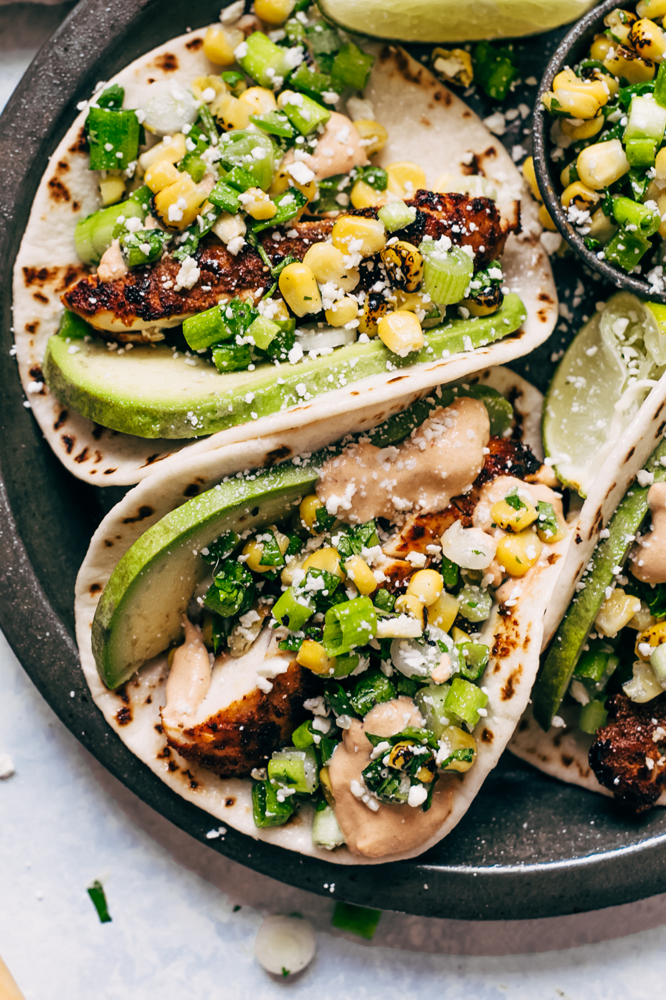

MEXICAN STREET CORN CHICKEN TACOS
Mexican Street Corn Chicken Tacos! It’s when esquites or street corn salad meets chicken tacos! These chipotle chicken tacos are loaded up with a simple roasted corn salad and topped with chipotle mayo!

INGREDIENTS
CHICKEN:
1 ½ pounds boneless chicken (breasts, tenders, or thighs)
2 tablespoons EACH: lime juice AND oil
2 teaspoon chipotle chili powder (or more to taste!)
1 ½ teaspoon EACH: garlic powder, ground cumin, AND kosher salt
STREET CORN TACOS:
1 ½ cups roasted corn
½ cup chopped scallions
¼ cup EACH: chopped cilantro AND crumbled Cotija cheese
1 jalapeno pepper, chopped
1 tablespoon lime juice
Flour or corn tortillas
1 avocado, sliced
SAUCE:
¼ cup EACH: sour cream AND mayo
1 tablespoon lime juice
1-2 tablespoons adobo sauce (see notes)
DIRECTIONS
CHICKEN:
Combine the lime juice, oil, chipotle powder, garlic, ground cumin, salt in a bowl. Add the chicken and toss using a rubber spatula so that the chicken is coated in the marinade. Allow the chicken to marinate for 30 minutes at room temperature or cover it and let it sit in the refrigerator for up to 8 hours. Lightly spray a nonstick skillet with cooking spray and cook the chicken over medium-high heat 6-10 minutes, flipping halfway through until it cooks through.
STREET CORN:
Combine the corn, scallions, cilantro, cotija cheese, jalapeno, and lime juice in a bowl. Season with a big pinch of salt and pepper. Taste and adjust as needed; set aside.
SAUCE:
Whisk together the sour cream, mayo, lime juice, and 1 tablespoon of adobo sauce in a bowl. Taste and add additional adobo sauce and salt as desired.
TACOS:
Warm the tortillas, add chicken, a slice of avocado, street corn, and top with chipotle sauce. Serve with lime wedges if desired.
NOTES:
adobo sauce is the liquid stuff that chipotle peppers come packed in, when you buy the cans!